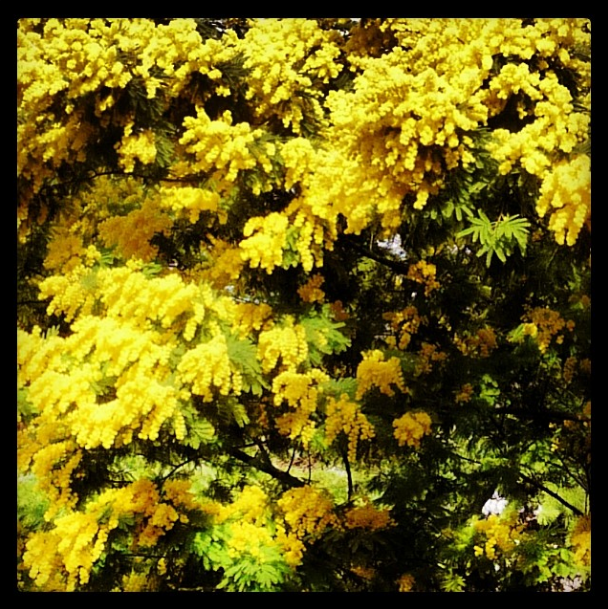

Today the world celebrates the International Women's Day and in Italy many donne will receive the mimosa, a yellow flower that symbolizes the woman's strength and femininity. It looks like the mimosa was chosen by Italian women right after the end of WW2, because it is one of the few plants to be in bloom in early March. Buona festa della donna to all women around the world!Post Scriptum: Don’t forget to subscribe to our blog to get more insights on beautiful Italy!